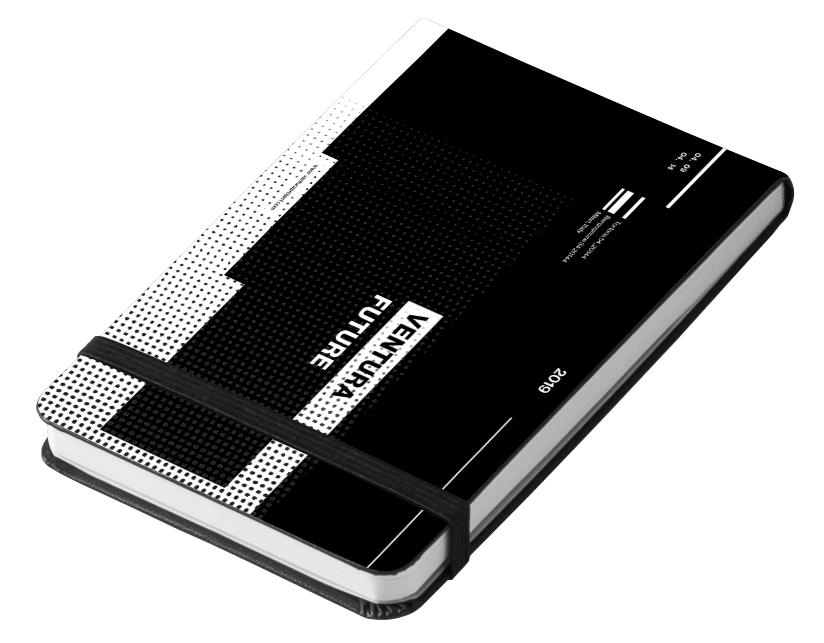
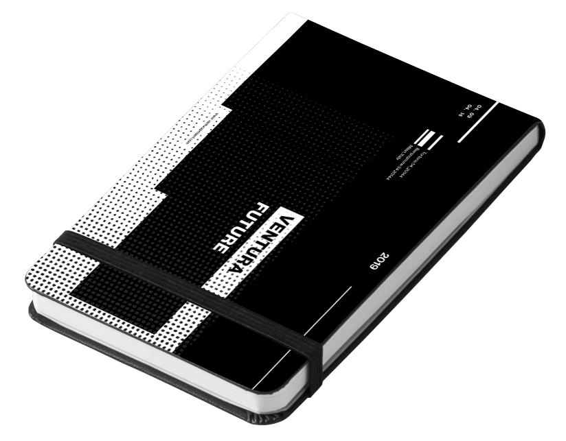

Ventura Future
Ventura Future is a cultural organization based in Milan whose focus is to highlight and promote contemporary design and new designers. Designers are urged to apply to be part of the design exhibitions that are curated by the organization and the exhibitions are held during the annual Milan Design Week.
Role
Graphic Designer, Interaction Designer, Copywriter, UI Designer
Tools
Illustrator, Photoshop, Figma, InDesign, After Effects
Team
David Baik, Jonathan Choi, Chloe Velasquez
Duration
4 Weeks (December 2020)
The Project
The premise of the project was to create graphic assets as well as digital assets for Ventura Future, a cultural organization based in Milan, Italy. Before starting, we took inspiration from the radical modernist, Dan Friedman, to start the project. As junior designers, we felt the importance of studying figures from the past that shaped the design world as we know it today.
Study of Dan Friedman
From our study of Dan Friedman's works, we pulled four qualities that we believed were present in all of his work.
- Use of combination grids
- Energy created through scale and orientation
- Reversible figure ground motifs
- Varying use of typographic alignment
Graphic Experimentation
With the four qualities in mind, the team experimented graphically to create posters, tote bags, and sketchbooks to use for future Ventura Future eventssketch.


 


Graphic Assets
Through following critique sessions, the project had its final pivot and landed on a direction that considered qualities that were working and ultimately dropped the qualities that were not working. The choice of graphic assets changed to posters, tote bags, and landyards to match the essence of Ventura Future more. The following factors contributed to this direction:
- Four main colours used which represent the four different themes in Ventura Future 2019: Violet— Craft, Blue— Tech, Yellow— Food, and Academies— Green
- Type was scaled up as well as oriented to create energetic and dynamic figure ground layouts
- The negative spaces created from the figure ground were used to hold content or the colours
Microsite: Ideation
The team decided to intervene at the pre-purchase point and encourage applications from designers for Ventura Future 2020. Ventura Future fully relies on designer applications for the exhibition to run, as there would be no design exhibition with no applicants. The benefits of becoming an exhibitor is the exposure, the networking opportunities, and global recognition.
With the benefits taken into consideration, the microsite proposes to promote the 2020 Ventura Future exhibition to increase the number of applicants by highlighting the benefits prospective exhibitors may receive using past statistics from the 2019 exhibition.
Interactions
The microsite uses an infinite scroll and it acts as the main interaction for the users to navigate through the site.

The user loads into the microsite and is met with a black screen that decodes into numbers that were significant to Ventura Future 2019. Once the numbers are loaded, visitors are prompted to scroll down through the scroll indicator.
As the page scrolls, the progress bar follows and also highlights the numbers and its meaning through the content on the right.

There is a call-to-action at the end of the microsite that leads the visitors to the applicatino page on the main Ventura Projects website.
Demo video with all interactions.
Reflection
As junior designers, it is important to study precedent designers who shaped the industry as we know it today. Studying Dan Friedman allowed the team to understand what Friedman meant by referring to himself as a radical modernist. The use of Swiss typography in a non-conventional way set Dan Friedman apart from other designers. Transferring Dan Friedman's graphic design qualities into interaction design was also an important step as the team learned that not all graphic design elements translated well into interaction design elements. It is crucial to have a solid foundation in graphic design to do well in interaction design. Thus, concluding that graphic design skills are vital to create a great UI design.
Back to top